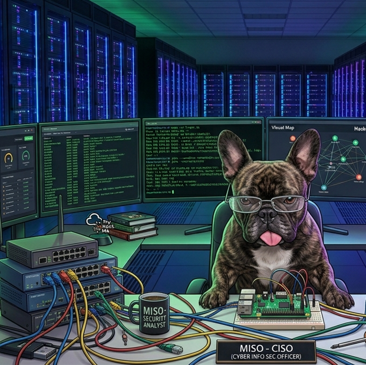
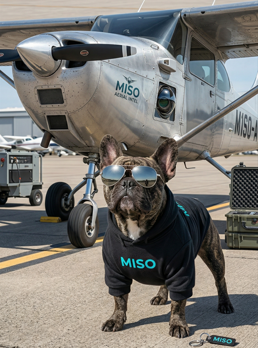

Home Network Lab practice.
Networking practice. Segmentation. Security. OSI layers. Network traffic.
Show me CYBER-seCURIOSITY
CYBER-seCURIOSITY
Snapshot list of current and upcoming security projects. Use the project links below to open a reusable detail template, or visit the lorem showcase mockup for layout ideas.

Networking practice. Segmentation. Security. OSI layers. Network traffic.
Show me
That one time I nearly got sued by my employer for building software saved/made them a shit-tonne of cash.
Show me